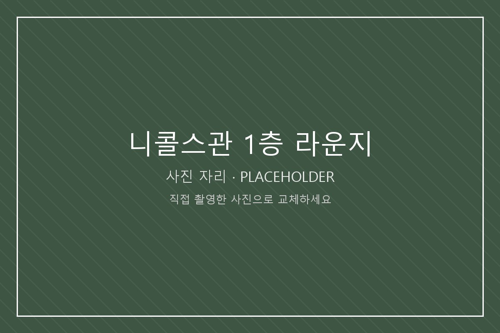

이 장소가 의미 있는 이유
도서관은 너무 조용하고 밖은 너무 시끄러울 때 남는 선택지가 여기다. 사람이 지나다니는 소리가 배경으로 깔리는데, 그 정도 소음이 오히려 집중에 도움이 된다.
조별 과제 첫 모임을 여기서 했다. 서로 이름도 잘 모르는 상태로 앉았는데 정면으로 마주 보지 않아도 되는 자리 배치 덕분에 대화가 덜 어색했다. 그 뒤로 사람을 만나기로 하면 습관처럼 이곳을 말하게 됐다.
찾아가는 방법
니콜스관 정문으로 들어가면 바로 1층에 개방된 라운지 공간이 있다. 같은 층에 학생생활상담소와 카페가 있어 위치를 찾기 쉽다. 창가 쪽 테이블이 콘센트와 가깝다.
여기에서 해볼 것
- 지나가는 사람들의 걷는 속도가 시간대마다 어떻게 다른지 보기
- 같은 자리에서 한 시간 동안 몇 명이 아는 사람을 만나는지 세어 보기
- 노트북을 열기 전에 오늘 끝낼 일 한 가지만 적어 두기
- 처음 만나는 조원과 여기서 약속 잡아 보기
가기 좋은 시간
점심시간 직후에는 자리가 빠르게 찬다. 오전 수업이 끝나는 시간대를 피해 오후 2시 이후에 가면 여유가 있다.